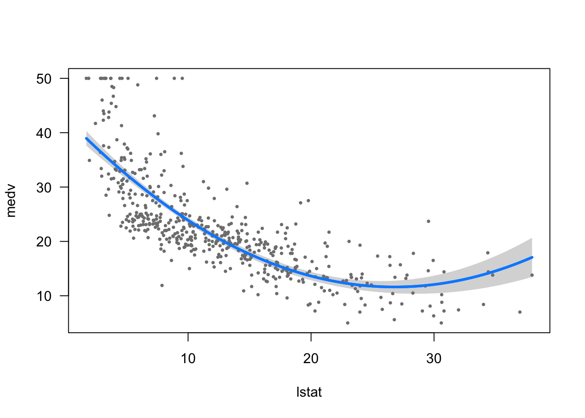
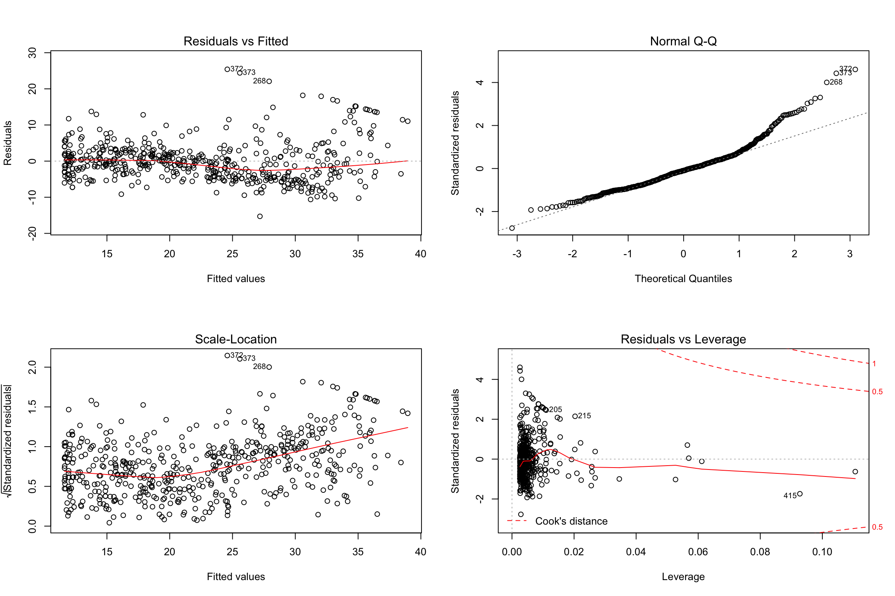
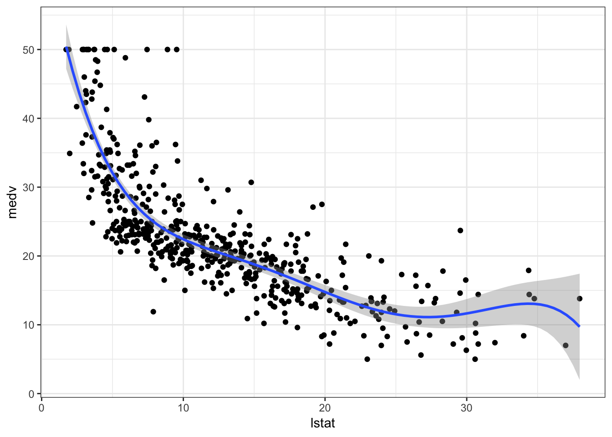
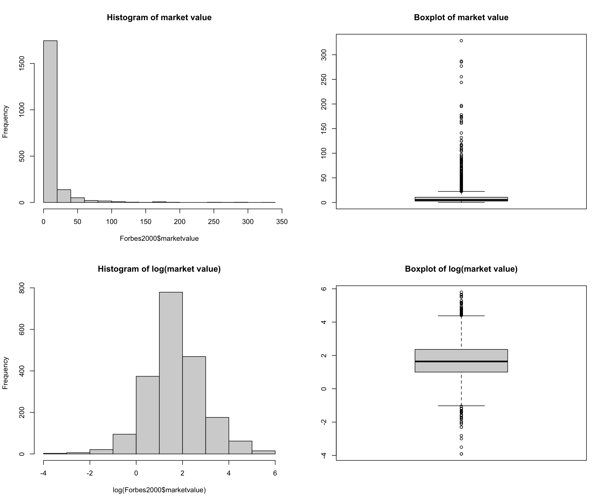

9 Multiple Linear Regression
In order to fit a multiple linear regression model using least squares, we again use the lm() function. The syntax lm(y ~ x1 + x2 + x3) is used to fit a model with three predictors, x1, x2, and x3. The summary() function now outputs the regression coefficients for all the predictors.
ls.fit <- lm(medv ~ lstat + age, data = Boston)
summary(ls.fit)##
## Call:
## lm(formula = medv ~ lstat + age, data = Boston)
##
## Residuals:
## Min 1Q Median 3Q Max
## -15.981 -3.978 -1.283 1.968 23.158
##
## Coefficients:
## Estimate Std. Error t value Pr(>|t|)
## (Intercept) 33.22276 0.73085 45.458 < 2e-16 ***
## lstat -1.03207 0.04819 -21.416 < 2e-16 ***
## age 0.03454 0.01223 2.826 0.00491 **
## ---
## Signif. codes: 0 '***' 0.001 '**' 0.01 '*' 0.05 '.' 0.1 ' ' 1
##
## Residual standard error: 6.173 on 503 degrees of freedom
## Multiple R-squared: 0.5513, Adjusted R-squared: 0.5495
## F-statistic: 309 on 2 and 503 DF, p-value: < 2.2e-16
The Boston data set contains 13 variables, and so it would be cumbersome to have to type all of these in order to perform a regression using all of the predictors. Instead, we can use the following short-hand:
ls.fit <- lm(medv ~ ., data = Boston)
summary(ls.fit)##
## Call:
## lm(formula = medv ~ ., data = Boston)
##
## Residuals:
## Min 1Q Median 3Q Max
## -15.595 -2.730 -0.518 1.777 26.199
##
## Coefficients:
## Estimate Std. Error t value Pr(>|t|)
## (Intercept) 3.646e+01 5.103e+00 7.144 3.28e-12 ***
## crim -1.080e-01 3.286e-02 -3.287 0.001087 **
## zn 4.642e-02 1.373e-02 3.382 0.000778 ***
## indus 2.056e-02 6.150e-02 0.334 0.738288
## chas 2.687e+00 8.616e-01 3.118 0.001925 **
## nox -1.777e+01 3.820e+00 -4.651 4.25e-06 ***
## rm 3.810e+00 4.179e-01 9.116 < 2e-16 ***
## age 6.922e-04 1.321e-02 0.052 0.958229
## dis -1.476e+00 1.995e-01 -7.398 6.01e-13 ***
## rad 3.060e-01 6.635e-02 4.613 5.07e-06 ***
## tax -1.233e-02 3.760e-03 -3.280 0.001112 **
## ptratio -9.527e-01 1.308e-01 -7.283 1.31e-12 ***
## black 9.312e-03 2.686e-03 3.467 0.000573 ***
## lstat -5.248e-01 5.072e-02 -10.347 < 2e-16 ***
## ---
## Signif. codes: 0 '***' 0.001 '**' 0.01 '*' 0.05 '.' 0.1 ' ' 1
##
## Residual standard error: 4.745 on 492 degrees of freedom
## Multiple R-squared: 0.7406, Adjusted R-squared: 0.7338
## F-statistic: 108.1 on 13 and 492 DF, p-value: < 2.2e-16
We can access the individual components of a summary object by name (type ?summary.lm to see what is available). Hence summary(lm.fit)$r.sq gives us the \(R^2\), and summary(lm.fit)$sigma gives us \(\hat{\sigma}\).
If we would like to perform a regression using all of the variables but except one, we can remove it using -. For example, in the above regression output, age has a high p-value. So we may wish to run a regression excluding this predictor. The following syntax results in a regression using all predictors except age.
ls.fit1 <- lm(medv ~ . - age, data = Boston)
summary(ls.fit1)##
## Call:
## lm(formula = medv ~ . - age, data = Boston)
##
## Residuals:
## Min 1Q Median 3Q Max
## -15.6054 -2.7313 -0.5188 1.7601 26.2243
##
## Coefficients:
## Estimate Std. Error t value Pr(>|t|)
## (Intercept) 36.436927 5.080119 7.172 2.72e-12 ***
## crim -0.108006 0.032832 -3.290 0.001075 **
## zn 0.046334 0.013613 3.404 0.000719 ***
## indus 0.020562 0.061433 0.335 0.737989
## chas 2.689026 0.859598 3.128 0.001863 **
## nox -17.713540 3.679308 -4.814 1.97e-06 ***
## rm 3.814394 0.408480 9.338 < 2e-16 ***
## dis -1.478612 0.190611 -7.757 5.03e-14 ***
## rad 0.305786 0.066089 4.627 4.75e-06 ***
## tax -0.012329 0.003755 -3.283 0.001099 **
## ptratio -0.952211 0.130294 -7.308 1.10e-12 ***
## black 0.009321 0.002678 3.481 0.000544 ***
## lstat -0.523852 0.047625 -10.999 < 2e-16 ***
## ---
## Signif. codes: 0 '***' 0.001 '**' 0.01 '*' 0.05 '.' 0.1 ' ' 1
##
## Residual standard error: 4.74 on 493 degrees of freedom
## Multiple R-squared: 0.7406, Adjusted R-squared: 0.7343
## F-statistic: 117.3 on 12 and 493 DF, p-value: < 2.2e-169.1 Interaction Terms
It is easy to include interaction terms in a linear model using the lm() function. The syntax lstat:black tells R to include an interaction term between lstat and black. The syntax lstat*age simultaneously includes lstat,age, and the interaction term lstat \(\times\)age as predictors; it is a shorthand for lstat + age + lstat:age.
summary(lm(medv ~ lstat*age, data = Boston))##
## Call:
## lm(formula = medv ~ lstat * age, data = Boston)
##
## Residuals:
## Min 1Q Median 3Q Max
## -15.806 -4.045 -1.333 2.085 27.552
##
## Coefficients:
## Estimate Std. Error t value Pr(>|t|)
## (Intercept) 36.0885359 1.4698355 24.553 < 2e-16 ***
## lstat -1.3921168 0.1674555 -8.313 8.78e-16 ***
## age -0.0007209 0.0198792 -0.036 0.9711
## lstat:age 0.0041560 0.0018518 2.244 0.0252 *
## ---
## Signif. codes: 0 '***' 0.001 '**' 0.01 '*' 0.05 '.' 0.1 ' ' 1
##
## Residual standard error: 6.149 on 502 degrees of freedom
## Multiple R-squared: 0.5557, Adjusted R-squared: 0.5531
## F-statistic: 209.3 on 3 and 502 DF, p-value: < 2.2e-169.2 Nonlinear Transformations for the Predictors
The lm() function can also accommodate non-linear transformations of the predictors. For instance, given a predictor \(X\) , we can create a predictor \(X^2\) using I(X^2). The function I() is needed since the ^ has a special meaning in a formula; wrapping as we do allows the standard usage in R, which is I() to raise \(X\) to the power 2. We now perform a regression of medv onto lstat and lstat\(^2\) .
lm.fit2 <- lm(medv ~ lstat + I(lstat^2), data = Boston)
summary(lm.fit2)##
## Call:
## lm(formula = medv ~ lstat + I(lstat^2), data = Boston)
##
## Residuals:
## Min 1Q Median 3Q Max
## -15.2834 -3.8313 -0.5295 2.3095 25.4148
##
## Coefficients:
## Estimate Std. Error t value Pr(>|t|)
## (Intercept) 42.862007 0.872084 49.15 <2e-16 ***
## lstat -2.332821 0.123803 -18.84 <2e-16 ***
## I(lstat^2) 0.043547 0.003745 11.63 <2e-16 ***
## ---
## Signif. codes: 0 '***' 0.001 '**' 0.01 '*' 0.05 '.' 0.1 ' ' 1
##
## Residual standard error: 5.524 on 503 degrees of freedom
## Multiple R-squared: 0.6407, Adjusted R-squared: 0.6393
## F-statistic: 448.5 on 2 and 503 DF, p-value: < 2.2e-16# plot
visreg(lm.fit2)
The near-zero p-value associated with the quadratic term suggests that it leads to an improved model. We use the anova() function to further quantify the extent to which the quadratic fit is superior to the linear fit.
anova(lm.fit, lm.fit2)## Analysis of Variance Table
##
## Model 1: medv ~ lstat
## Model 2: medv ~ lstat + I(lstat^2)
## Res.Df RSS Df Sum of Sq F Pr(>F)
## 1 504 19472
## 2 503 15347 1 4125.1 135.2 < 2.2e-16 ***
## ---
## Signif. codes: 0 '***' 0.001 '**' 0.01 '*' 0.05 '.' 0.1 ' ' 1
Here Model 1 (lm.fit) represents the linear submodel containing only one predictor, lstat, while Model 2 (lm.fit2) corresponds to the larger quadratic model that has two predictors, lstat and lstat\(^2\) . The anova() function performs a hypothesis test comparing the two models. The null hypothesis is that the two models fit the data equally well, and the alternative hypothesis is that the full model is superior. Here the F-statistic is 135.1998221 and the associated p-value is virtually zero. This provides very clear evidence that the model containing the predictors lstat and lstat\(^2\) is far superior to the model that only contains the predictor lstat. This is not surprising, since earlier we saw evidence for non-linearity in the relationship between medv and lstat. If we type
par(mfrow = c(2,2))
plot(lm.fit2)
par(mfrow = c(1, 1))then we see that when the lstat\(^2\) term is included in the model, there is little discernible pattern in the residuals.
In order to create a cubic fit, we can include a predictor of the form I(X^3). However, this approach can start to get cumbersome for higher order polynomials. A better approach involves using the poly() function to create the polynomial within lm(). For example, the following command produces a fifth-order polynomial fit:
lm.fit5 <- lm(medv ~ poly(lstat, 5), data = Boston)
summary(lm.fit5)##
## Call:
## lm(formula = medv ~ poly(lstat, 5), data = Boston)
##
## Residuals:
## Min 1Q Median 3Q Max
## -13.5433 -3.1039 -0.7052 2.0844 27.1153
##
## Coefficients:
## Estimate Std. Error t value Pr(>|t|)
## (Intercept) 22.5328 0.2318 97.197 < 2e-16 ***
## poly(lstat, 5)1 -152.4595 5.2148 -29.236 < 2e-16 ***
## poly(lstat, 5)2 64.2272 5.2148 12.316 < 2e-16 ***
## poly(lstat, 5)3 -27.0511 5.2148 -5.187 3.10e-07 ***
## poly(lstat, 5)4 25.4517 5.2148 4.881 1.42e-06 ***
## poly(lstat, 5)5 -19.2524 5.2148 -3.692 0.000247 ***
## ---
## Signif. codes: 0 '***' 0.001 '**' 0.01 '*' 0.05 '.' 0.1 ' ' 1
##
## Residual standard error: 5.215 on 500 degrees of freedom
## Multiple R-squared: 0.6817, Adjusted R-squared: 0.6785
## F-statistic: 214.2 on 5 and 500 DF, p-value: < 2.2e-16
This suggests that including additional polynomial terms, up to fifth order, leads to an improvement in the model fit! However, further investigation of the data reveals that no polynomial terms beyond fifth order have significant p-values in a regression fit.
library(ggplot2)
ggplot(data = Boston, aes(x = lstat, y = medv)) +
geom_point() +
theme_bw() +
stat_smooth(method = "lm", formula = y ~ poly(x, 5))
Of course, we are in no way restricted to using polynomial transformations of the predictors. Here we try a log transformation.
summary(lm(medv ~ log(rm), data = Boston))##
## Call:
## lm(formula = medv ~ log(rm), data = Boston)
##
## Residuals:
## Min 1Q Median 3Q Max
## -19.487 -2.875 -0.104 2.837 39.816
##
## Coefficients:
## Estimate Std. Error t value Pr(>|t|)
## (Intercept) -76.488 5.028 -15.21 <2e-16 ***
## log(rm) 54.055 2.739 19.73 <2e-16 ***
## ---
## Signif. codes: 0 '***' 0.001 '**' 0.01 '*' 0.05 '.' 0.1 ' ' 1
##
## Residual standard error: 6.915 on 504 degrees of freedom
## Multiple R-squared: 0.4358, Adjusted R-squared: 0.4347
## F-statistic: 389.3 on 1 and 504 DF, p-value: < 2.2e-16ggplot(data = Boston, aes(x = log(rm), y = medv)) +
geom_point() +
theme_bw() +
stat_smooth(method = "lm")